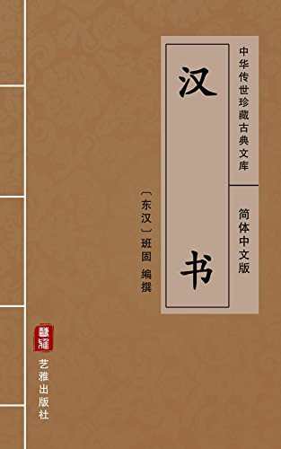

第9卷#

【元帝纪第九】
孝元皇帝，宣帝太子也。母曰共哀许皇后，宣帝微时生民间。年二岁，宣帝即位。八岁，立为太子。壮大，柔仁好儒。见宣帝所用多文法吏，以刑名绳下，大臣杨恽、盖宽饶等坐刺讥辞语为罪而诛，尝侍燕从容言：「陛下持刑太深，宜用儒生。」宣帝作色曰：「汉家自有制度，本以霸王道杂之，奈何纯任德教，用周政乎！且俗儒不达时宜，好是古非今，使人眩于名实，不知所守，何足委任？」乃叹曰：「乱我家者，太子也！」由是疏太子而爱淮阳王，曰：「淮阳王明察好法，宜为吾子。」而王母张婕妤尤幸。上有意欲用淮阳王代太子，然以少依许氏，俱从微起，故终不背焉。
黄龙元年十二月，宣帝崩。癸巳，太子即皇帝位，谒高庙。尊皇太后曰太皇太后，皇后曰皇太后。
初元元年春正月辛丑，孝宣皇帝葬杜陵。赐诸侯王、公主、列侯黄金，吏二千石以下钱、帛，各有差。大赦天下。
三月，封皇太后兄侍中中郎将王舜为安平侯。丙午，立皇后王氏。以三辅、太常、郡国公田及苑可省者振业贫民，訾不满千钱者赋贷种、食。封外祖父平恩戴侯同产弟子中常侍许嘉为平恩侯，奉戴侯后。
夏四月，诏曰：「朕承先帝之圣绪，获奉宗宙，战战兢兢。间者地数动而未静，惧于天地之戒，不知所由。方田作时，朕忧蒸庶之失业，临遣光禄大夫褒等十二人循行天下，存问耆老、鳏、寡、孤、独、困乏、失职之民，延登贤俊，招显侧陋，因览风俗之化。相、守二千石诚能正躬劳力，宣明教化，以亲万姓，则六合之内和亲，庶几虖无忧矣。《书》不云乎？『股肱良哉，庶事康哉！』布告天下，使明知朕意。」又曰：「关东今年谷不登，民多困乏。其令郡国被灾害甚者毋出租赋。江、海、陂、湖、园、池属少府者以假贫民，勿租赋。赐宗室有属籍者马一匹至二驷，三老、孝者帛五匹，弟者、力田三匹、鳏、寡、孤、独二匹，吏民五十户牛、酒。」
六月，以民疾疫，令大官损膳，减乐府员，省苑马，以振困乏。
秋八月，上郡属国降胡万余人亡入匈奴。
九月，关东郡国十一大水，饥，或人相食，转旁郡钱、谷以相救。诏曰：「间者，阴阳不调，黎民饥寒，无以保治，惟德浅薄，不足以充入旧贯之居。其令诸宫、馆希御幸者勿缮治，太仆减谷食马，水衡省肉食兽。」
二年春正月，行幸甘泉，郊泰畤。赐云阳民爵一级，女子百户牛、酒。
立弟竟为清河王。
三月，立广陵厉王太子霸为王。
诏罢黄门乘舆狗马，水衡禁囿、宜春下苑、少府佽飞外池、严B054池田假与贫民。诏曰：「盖闻贤圣在位，阴阳和，风雨时，日月光，星辰静，黎庶康宁，考终厥命。今朕恭承天地，托于公侯之上，明不能烛，德不能绥，灾异并臻，连年不息。乃二月戊午，地震于陇西郡，毁落太上皇庙殿壁木饰，坏败E56C道县城郭官寺及民室屋，压杀人众。山崩地裂，水泉涌出。天惟降灾，震惊朕师。治有大亏，咎至于斯。夙夜兢兢，不通大变，深惟郁悼，未知其序。间者岁数不登，元元困乏，不胜饥寒，以陷刑辟，朕甚闵之。郡国被地动灾甚者，无出租赋。赦天下。有可蠲除、减省以便万姓者，条秦，毋有所讳。丞相、御史、中二千石举茂材异等、直言极谏之士，朕将亲览焉。」
夏四月丁巳，立皇太子。赐御史大夫爵关内侯，中二千石右庶长，天下当为父后者爵一级，列侯钱各二十万，五大夫十万。
六月，关东饥，齐地人相食。
秋七月，诏曰：「岁比灾害，民有菜色，惨怛于心。已诏吏虚仓廪，开府库振救，赐寒者衣。今秋禾麦颇伤。一年中地再动。北海水溢，流杀人民。阴阳不和，其咎安在？公卿将何以忧之？其悉意陈朕过，靡有所讳。」
冬，诏曰：「国之将兴，尊师而重傅。故前将军望之傅朕八年，道以经书，厥功茂焉。其赐爵关内侯，食邑八百户，朝朔、望。」
十二月，中书令弘恭、石显等谮望之，令自杀。
三年春，令诸侯相位在郡守下。
珠厓郡山南县反，博谋群臣。待诏贾捐之以为宜弃珠厓，救民饥馑。乃罢珠厓。
夏四月乙未晦，茂陵白鹤馆灾。」诏曰：「乃者火灾降于孝武园馆，朕战栗恐惧。不烛变异，咎在朕躬。群司又未肯极言朕过，以至于斯，将何以寤焉！百姓仍遭凶厄，无以相振，加以烦扰虖苛吏，拘牵乎微文，不得永终性命，朕甚闵焉。其赦天下。」
夏，旱。立长沙炀王弟宗为王。封故海昏侯贺子代宗为侯。
六月，诏曰：「盖闻安民之道，本由阴阳。间者阴阳错谬，风雨不时。朕之不德，庶几群公有敢言朕之过者，今则不然。偷合苟从，未肯极言，朕甚闵焉。惟□庶之饥寒，远离父母、妻子，劳于非业之作，卫于不居之宫，恐非所以佐阴阳之道也。其罢甘泉、建章宫
卫，令就农。百官各省费。条奏毋有所讳。有司勉之，毋犯四时之禁。丞相、御史举天下明阴阳灾异者各三人。」于是言事者众，或进擢召见，人人自以得上意。
四年春正月，行幸甘泉，郊泰畤。
三月，行幸河东，祠后土。赦汾阴徒。赐民爵一级，女子百户牛、酒，鳏、寡、高年帛。行所过无出租赋。
五年春正月，以周子南君为周承休侯，位次诸侯王。
三月，行幸雍，祠五畤。
夏四月，有星孛于参。诏曰：「朕之不逮，序位不明，众僚久旷，未得其人。元元失望，上感皇天，阴阳为变，咎流万民，朕甚惧之。乃者关东连遭灾害。饥寒疾疫，夭不终命。《诗》不云乎，『凡民有丧，匍匐救之。』其令太官毋日杀，所具各减半。乘舆秣马，无乏正事而已。罢角抵、上林宫、馆希御幸者、齐三服官、北假田官、盐铁官、常平仓。博士弟子毋置员，以广学者。赐宗室子有属籍者马一匹至二驷，三老、孝者帛，人五匹，弟者、力田三匹，鳏、寡、孤、独二匹，吏民五十户牛、酒。」省刑罚七十余事。除光禄大夫以下至郎中保父母同产之令。令从官给事宫司马中者，得为大父母、父母、兄弟通籍。
冬十二月丁未，御史大夫贡禹卒。
卫司马谷吉使匈奴，不还。
永光元年春正月，行幸甘泉，效泰畤。赦云阳徒。赐民爵一级，女子百户牛、酒，高年帛。行所过毋出租赋。
二月，诏丞相、御史举质朴敦厚逊让有行者，光禄岁以此科第郎、从宫。
三月，诏曰：「五帝、三王任贤使能，以登至平，而今不治者，岂斯民异哉？咎在朕之不明，亡以知贤也。是故壬人在位，而吉士雍蔽。重以周、秦之弊，民渐薄俗，去礼义，触刑法，岂不哀哉！由此观之，元元何辜？其赦天下，令厉精自新，各务农亩。无田者皆假之，贷种、食如贫民。赐吏六百石以上爵五大夫，勤事吏二级，民一级，女子百户牛、酒，鳏、寡、孤、独、高年帛。」是月雨雪，陨霜伤麦稼，秋罢。
二年春二月，诏曰：「盖闻唐、虞象刑而民不犯，殷周法行而奸轨服。今朕获承高祖之洪业，托位公侯之上，夙夜战栗，永惟百姓之急，未尝有忘焉。然而阴阳未调，三光晻昧。元元大困，流散道路，盗贼并兴。有司又长残贼，失牧民之术。是皆朕之不明，政有所亏。咎至于此，朕甚自耻。为民父母，若是之薄，谓百姓何？其大赦天下，赐民爵一级，女子百户牛、酒，鳏、寡、孤、独、高年、三老、孝弟、力田帛。」又赐诸侯王、公主、列侯黄金，中二千石以下至中都官长吏各有差，吏六百石以上爵五大夫，勤事吏各二级。
三月壬戌朔，日有蚀之。诏曰：「朕战战栗栗，夙夜思过失，不敢荒宁。惟阴阳不调，未烛其咎，娄敕公卿，日望有效。至今有司执政，未得其中，施与禁切，未合民心，暴猛之俗弥长，和睦之道日衰，百姓愁苦，靡所错躬。是以氛邪岁增，侵犯太阳，正气湛掩，日久夺光。乃壬戌，日有蚀之，天见大异，以戒朕躬，朕甚悼焉。其令内郡国举茂材异等、贤良、直言之士各一人。」
夏六月，诏曰：「间者连年不收，四方咸困。元元之民，劳于耕耘，又亡成功，困于饥馑，亡以相救。朕为民父母，德不能覆，而有其刑，甚自伤焉。其赦天下。」
秋七月，西羌反，遣右将军冯奉世击之。
八月，以太常任千秋为奋威将军，别将五校并进。
三年春，西羌平，军罢。
三月，立皇子康为济阳王。
夏四月癸未，大司马车骑将军接薨。
冬十一月，诏曰：「乃者已丑地动，中冬雨水、大雾，盗贼并起。吏何不以时禁？各悉意对。」
冬，复盐铁官、博士弟子员。以用度不足，民多复除，无以给中外徭役。
四年春二月，诏曰：「朕承至尊之重，不能烛理百姓，娄遭凶咎。加以边境不安，师旅在外，赋敛、转输，元元骚动，穷困亡聊，犯法抵罪。夫上失其道而绳下以深刑，朕甚痛之。其赦天下，所贷贫民勿收责。」
三月，行幸雍，祠五畤。
夏六月甲戌，孝宣园东阙灾。
戊寅晦，日有蚀之。诏曰：「盖闻明王在上，忠贤布职，则群生和乐，方外蒙泽。今朕晻于王道，夙夜忧劳，不通其理，靡瞻不眩，靡听不惑，是以政令多还，民心未得，邪说空进，事亡成功。此天下所著闻也。公卿大夫好恶不同，或缘奸作邪，侵削细民，元元安所归命哉！乃六月晦，日有蚀之。《诗》不云乎？『今此下民，亦孔之哀！』自今以来，公卿大夫其勉思天戒，慎身修永，以辅朕之不逮。直言尽意，无有所讳。」
九月戊子，罢卫思后园及戾园。冬十月乙丑，罢祖宗宙在郡国者。诸陵分属三辅。以渭城寿陵亭部原上为初陵。诏曰：「安土重迁，黎民之性；骨肉相附，人情所愿也。顷者有司缘臣子之义，奏徙郡国
民以奉园陵，令百姓远弃先祖坟墓，破业失产，亲戚别离，人怀思慕之心，家有不安之意。是以东垂被虚耗之害，关中有无聊之民，非久长之策也。《诗》不云乎？『民亦劳止，迄可小康，惠此中国，以绥四方。』今所为初陵者，勿置县邑，使天下咸安土乐业，亡有动摇之心。布告天下，令明知之。」又罢先后父母奉邑。
五年春正月，行幸甘泉，效泰畤。
三月，上幸河东，祠后土。
秋，颍川水出，流杀人民。吏、从官县被害者与告，士卒遣归。
冬，上幸长杨射熊馆，布车骑，大猎。
十二月乙酉，毁太上皇、孝惠皇帝寝庙园。
建昭元年春三月，上幸雍，祠五畤。
秋八月，有白蛾群飞蔽日，从东都门至枳道。
冬，河间王元有罪，废迁房陵。罢孝文太后、孝昭太后寝园。
二年春正月，行幸甘泉，郊泰畤。
三月，行幸河东，祠后土。益三河大郡太守秩。户十二万为大郡。
夏四月，赦天下。
六月，立皇子舆为信都王，闰月丁酉，太皇太后上官氏崩。
冬十一月，齐、楚地震，大雨雪，树折屋坏。
淮阳王舅张博、魏君太守京房坐窥道诸侯王以邪意，漏泄省中语，博要斩，房弃市。
三年夏，令三辅都尉、大郡都尉秩皆二千石。
六月甲辰，丞相玄成薨。
秋，使护西域骑都尉甘延寿、副校尉陈汤挢发戊已校尉屯田吏、士及西域胡兵攻郅支单于。冬，斩其首，传诣京师，县蛮夷邸门。
四年春正月，以诛郅支单于告祠郊庙。赦天下。群臣上寿。置酒，以其图书示后宫贵人。
夏四月，诏曰：「朕承先帝之休烈，夙夜栗栗，惧不克任。间者阴阳不调，五行失序，百姓饥馑。惟□庶之失业，临遣谏大夫博士赏等二十一人循行天下，存问耆老、鳏、寡、孤、独、乏困、失职之人，举茂材特立之士。相、将、九卿，其帅意毋怠，使朕获观教化之流焉。」
六月甲申，中山王竟薨。
蓝田地沙石雍霸水，安陵岸崩雍泾水，水逆流。
五年春三月，诏曰：「盖闻明王之治国也，明好恶而定去就，崇敬让而民兴行，故法设而民不犯，令施而民从。今朕获保宗庙，兢兢业业，匪敢解怠，德薄明晻，教化浅微。传不云乎？『百姓有过，在予一人。』其赦天下，赐民爵一级，女子百户牛、酒，三老、孝弟、力田帛。」又曰：「方春，农桑兴，百姓戮力自尽之时也，故是月劳农劝民，无使后时。今不良之吏，覆案小罪，征召证案，兴不急之事，以妨百姓，使失一时之作，亡终岁之功，公卿其明察申敕之。」
夏六月庚申，复戾园。
壬申晦，日有蚀之。
秋七月庚子，复太上皇寝庙园、原庙，昭灵后、武哀王、昭哀后、卫思后园。
竟宁元年春正月，匈奴乎韩邪单于来朝。诏曰：「匈奴郅支单于背叛礼义，既伏其辜，乎韩邪单于不忘恩德，乡慕礼义，复修朝贺之礼，愿保塞传之无穷，边垂长无兵革之事。其改元为竟宁，赐单于待诏掖庭王樯为阏氏。」
皇太子冠。赐列侯嗣子爵五大夫，天下为父后者爵一级。
二月，御史大夫延寿卒。
三月癸未，复孝惠皇帝寝庙园、教文太后、孝昭太后寝园。
夏，封骑都尉甘延寿为列侯。赐副校尉陈汤爵关内侯、黄金百斤。
五月壬辰，帝崩于未央宫。
毁太上皇、孝惠、孝景皇帝庙。罢孝文、孝昭太后、昭灵后、武哀王、昭哀后寝园。
秋七月丙戌，葬渭陵。
赞曰：臣外祖兄弟为元帝侍中，语臣曰：元帝多材艺，善史书。鼓琴瑟，吹洞箫，自度曲，被歌声，分□节度，穷极幼眇。少而好儒，及即位，征用儒生，委之以政，贡、薛、韦、匡迭为宰相。而上牵制文义，优游不断，孝宣之业衰焉。然宽弘尽下，出于恭俭，号令温雅，有古之风烈。